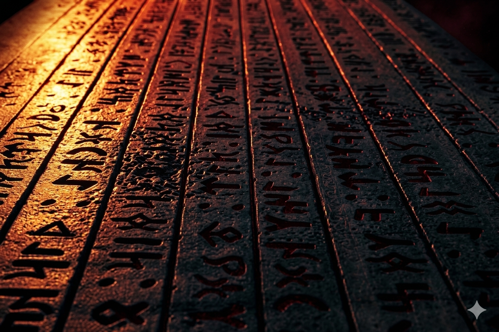

Ölümün Anlatısı
Ölüm, kayıp ve yasın insana bıraktığı derin izi; acının içinden öğrenilebilecek ruhsal dersleri anlatan kişisel bir Dimitri yazısı.

Ölüm bizleri çoğu zaman üzer, kırar, bazen de yıkar. Ama ölümün kişiye verdiği zararı, çoğu zaman o kişinin ölüme bakış açısı belirler. Bu yazıda size bir falcı, bir büyücü ya da bir ruhsal danışman olarak değil; ölümü en yakınlarında öğrenmiş, yıkılmış, dağılmış ve parçalanmış bir dostunuz olarak yazıyorum.
Dünyada her şeyin, gün içinde önünüzden geçen kırmızı bir arabanın bile bir amacı olduğu gibi, ölümün de bir amacı var. Bu öyle bir dengedir ki insan bunu düşünürken beynini patlayacak gibi hissedebilir. Ölen kişi ölümü deneyimler. Yakınları birini kaybetmeyi deneyimler ve bir şeyler öğrenir. Toprak, bir insan bedeninden faydalanmayı deneyimler. Bunun gibi görünmeyen ama birbirine bağlı birçok olgu vardır.
Ölümün kişiye bıraktığı ders
Asıl önemli olan şudur: Sen ölümün gelişine öfke duyup yalnızca acısını mı yaşayacaksın, yoksa evrenin sana yaşattığı bu acı olayı anlayıp öğrenmen gerekeni öğrenerek yoluna devam mı edeceksin? Ölüm bu hayattaki en büyük derslerden biridir. Bu dersten geçmek veya kalmak ise insanın kendi tercihidir.
Ölümün sana öğrettiği şeyleri alıp hayatının geri kalanında öğrendiklerinle mi yaşayacaksın, yoksa evrenin sana vermek istediği dersi almayıp daha sert bir derste mi öğreneceksin? Unutma, eğer akışın önüne getirdiği derslerden ve tecrübelerden faydalanmayıp onları es geçmek istersen, yarın daha büyük ve daha zor bir dersle karşılaşabilirsin.
Bedel ve yol ayrımı
Önemli olan bedel ödemek değildir; çünkü bedel ödemek çoğu zaman zorunludur. Asıl mesele, ödenen bedelin zorluğunun hangi yolu tercih ettiğinle değişmesidir. Acının içinden geçerken insan bazen sadece kaybettiğini görür. Oysa bazen kaybın ardında, insanın hayatına yön veren en büyük farkındalık saklıdır.
Sen hangi yolu seçeceksin? Ölümü yalnızca yıkım olarak mı göreceksin, yoksa onun sana anlatmaya çalıştığı ağır ama derin dersi duymaya mı çalışacaksın? Eğer konuşmak istersen her zaman buradayım.